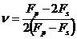

Linear input type conversions
The following conversion formulas are used for the linear input type.
Dynamic stiffness
Manual

Bulk stiffness
Velocities
(not changed by other values)
where:
Fp = Dynamic uniaxial stiffness
Fs = Dynamic shear stiffness
E = Young’s modulus
= Poisson’s ratio
K = Bulk stiffness
G = Shear modulus
= Density
vp = Compressional sonic velocity
vs = Shear sonic velocity